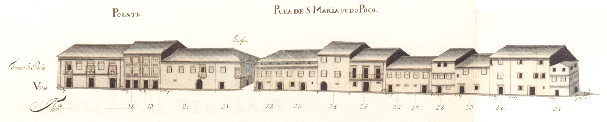

Rua de Sta. Maria ou do Poço
Longa e importantíssima artéria que ligava a
Catedral com o terreiro de S. Paulo ou de S. Tiago
onde existia a principal porta da cidade virada a Sul,
a Porta de S. Tiago, depois chamada do Colégio.Rua de farta história foi um eixo fundamental da
cidade, só deixando de o ser a partir da data em que
o centro se mudou para o eixo rua do Souto-Arcada.Na Idade Média era por aqui que se tinha acesso à
feira que se fazia algures, junto à porta da muralha,
no Terreiro de S. Tiago. Nela também talvez tivesse
havido um mercado de forragens, pois foi conhecida,
no séc. XIV, com o nome de rua da Erva.No séc. XV, instalou-se em casa logo pegada à actual
Igreja de Santiago, a Sinagoga, sendo arruada esta
artéria aos judeus, por decisão do Senado; a rua
passou então a ser conhecida como rua da Judiaria.Em 1465, pelo menos, foi decidido mudar os judeus
para uma rua que não ficasse tão próxima da Sé, pois
causava má impressão haver tantas moradas de «casas
de hereges» em local tão próximo da Catedral, ou
Igreja de Santa Maria de Braga.Começou então a ser conhecida por rua de Santa Maria
e, também, por rua da Judiaria Velha.Entretanto instalou-se no contíguo terreiro de
S. Tiago o Colégio de S. Paulo, onde existiram os
Estudos Gerais.No séc. XVIII, tinha o nome de rua do Poço, que provinha de um poço municipal existente quase no
extremo Noroeste desta artéria que serviu desde a Idade Média até ao séc. XIX. A metade Sul, além da
rua das Travessas, foi também conhecida pelo nome de rua de S. Tiago.Alargada em fins do séc. XIX, manterá a sua importância como eixo. O comércio, esse,
é que não voltou.Hoje perdeu quase todas as casas que vemos no Mappa; e algumas eram bem interessantes como, por
exemplo, a casa do prazo n.° 16, com uma bela janela de canto, renascentista.Das 18 casas existentes no lado Nascente e 14 do lado Poente eram prazos do
Cabido 16 e 11 respectivamente.Tendo recebido ainda outros nomes, foi em 24 de Fevereiro de 1944
designada de rua D. Gonçalo Pereira, que mantém.
Rua de Sta. Maria ou do Poço - vista Nascente.
Rua de Sta. Maria ou do Poço - vista Poente.
- Casa 1: Enfiteuta - N/A, Foro - N/A
- Casa 2: Enfiteuta - Padre José Lopes, Foro - 420 reis e 2 galinhas
- Casa 3: Enfiteuta - Padre José Lopes, Foro - 250 reis e 2 galinhas
- Casa 4: Enfiteuta - António Ferreira, moleiro, Foro - 125 reis e galinha
- Casa 5 e 6: Enfiteuta - N/A, Foro - N/A
- Casa 7: Enfiteuta - Dr. Francisco Gomes do Couto, Foro - 180 reis e 4 galinhas
- Casa 8 e 9: Enfiteuta - Lic. Paulo de Sousa de Magalhães, de Barcelos, Foro - 1270 reis, 6 galinhas e 2 capões
- Casa 10: Enfiteuta - Francisco Pereira, alfaiate e sua mulher, Francisca de Campos, Foro - 250 reis e 2 capões
- Casa 11: Enfiteuta - Manuel Francisco, tratante, e sua mulher, Teresa Antunes, Foro - 210 reis e 4 galinhas
- Casa 12: Enfiteuta - Padre Diogo da Rocha, Foro - 110 reis e 1 capão
- Casa 13, 14 e 15: Enfiteuta - N/A, Foro - N/A
- Casa 16: Enfiteuta - N/A, Foro - N/A
- Casa 17: Enfiteuta - D. Bernarda Inácia Pereira Pimentel, viúva de José de Coimbra e Andrade, da cidade de Braga, Foro - 80 reis e 1 galinha
- Casa 18: Enfiteuta - Os herdeiros de Manuel Machado, alfaiate, Foro - 170 reis e 1 galinha
- Casa 19: Enfiteuta - N/A, Foro - N/A
- Casa 20: Enfiteuta - Padre Custódio Correira, vigário de Santiago, Foro - 680 reis e 2 galinhas
- Casa 21: Enfiteuta - Os herdeiros de Francisco de Almeida Cabral,
meirinho do Secular da cidade de Braga, Foro - 700 reis e 4 galinhas
- Casa 22: Enfiteuta - Dr. Francisco Gomes do Couto, Foro - 340 reis e 2 galinhas
- Casa 23: Enfiteuta - Dr. Francisco Gomes do Couto, Foro - 600 reis e 4 galinhas
- Casa 24: Enfiteuta - Os herdeiros do Cónego Bento da Silva Teles, Foro - 720 reis e 2 galinhas
- Casa 25: Enfiteuta - Cónego Francisco da Silva Teles, Foro - 900 reis e 4 galinhas
- Casa 26: Enfiteuta - Dr. Francisco Gomes do Couto, Foro - 90 reis e 1 galinha
- Casa 27: Enfiteuta - Dr. Francisco Gomes do Couto, Foro - 140 reis e 1 galinha
- Casa 28: Enfiteuta - António de Campos Peixoto, Foro - 290 reis e 2 galinhas
- Casa 29 e 30: Enfiteuta - Tomaz de Araújo e Brito, Abade, Foro - 600 reis e 6 galinhas
- Casa 31: Enfiteuta - N/A, Foro - N/A